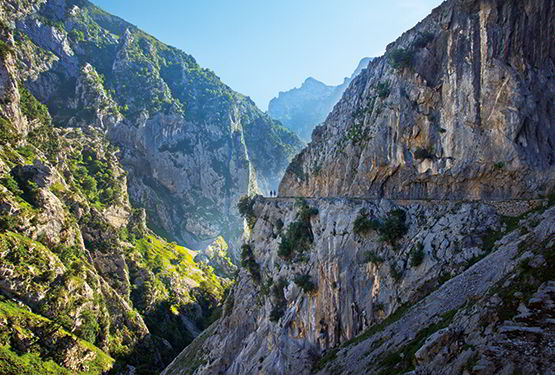

|
Asturias es la Comunidad Autónoma uniprovincial con más Reservas de la Biosfera de todo el territorio español: siete. El Parque Nacional de los Picos de Europa, el río Eo, Oscos y Terras de Burón, el Parque Natural de las Fuentes del Narcea, Degaña e Ibias, el Parque Natural de Somiedo, el Parque Natural de las Ubiñas-La Mesa, el Parque Natural de Redes y el Parque Natural de Ponga son los siete espacios que componen la red de la Biosfera en el Principado de Asturias. |
|
|  | Montañas y valles, altas cumbres, ríos y arroyos, cascadas, bosques, canales, surgencias, grutas, costa y playas, acantilados, aldeas y villas… El paisaje y el paisanaje adoptan mil formas en Asturias, y todas son una viva expresión de un territorio que ama su naturaleza, la cuida como un tesoro y es consciente del inmenso valor cultural y medioambiental que tal riqueza significa. Un recorrido detallado por las 7 Reservas de la Biosfera de Asturias es un viaje en constante comunión con lo natural que siempre resulta refrescante, saludable y gratificante. |